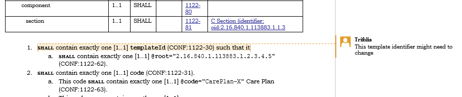
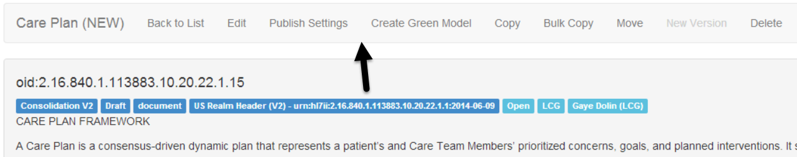

Released on Thursday, July 24, 2014
Templates do not require identifiers to be OIDs any longer. They can be one of four formats:
MS Word exports use the label “identifier” instead of “templateId” when outputting the template identifier.
Schematron is updated to detect if the identifier as in II format and look for @root=XXX and @extension=YYY
Creating a copy of a template automatically converts OID identifiers to II type and creates an extension for the identifier based on the date that the template is copied.
Note: Only “oid:XXX” and “urn:hl7ii:XX:YY” are valid formats for CDA documents.
Known Bug: Trifolia 2.15 supports a URI:XXXX format for identifiers. We have identified that this is invalid and support for this format of identifier will be removed in the 2.16 release of Trifolia.
Template and constraint notes can now be exported as part of the MS Word document. Trifolia notes will be exported as MS Word “Review Comments” so that readers can easily navigate through the notes.
Remember: Notes are not intended to be included in balloted artifacts. They are only intended to help manage the lifecycle of template design.
The “Export Settings” for MS Word has a checkbox for “Notes” which is un-checked by default.


Implementation guides now contain a “Display Name” which are used by exports. The display name is not required. When display name is not specified, exports will use the name of the implementation guide.
MS Exports now include a footer and a header. The footer contains page numbers and the name of the implementation guide. The header contains the date of the export and the calculated name of the implementation guide.
The “View Template” and “View Implementation Guide” pages have a more user-friendly navigation bar for selecting actions.
The “View Implementation Guide” page allows users to search for templates within the implementation guide.
View Implementation Guide Navigation

View Template Navigation

View Implementation Guide Template Search

New Feature |
Option to export Notes |
New Feature |
MS Export footer and title page |
New Feature |
Create a new field that has the "display" name of the IG |
New Feature |
Document/Section level tables - add templates to "Fixed Value" column (& maybe change name) |
New Feature |
Drop-down on View IG to select template |
Improvement |
Export templates to MS Word - value sets create as appendix default |
Improvement |
Use plugin interfaces in Schematron engine |
Improvement |
Use interfaces for Schematron Engine |
Improvement |
Improved navigability of "View Implementation Guide" and "View Template" |
Improvement |
Warn user when leaving publish settings without saving changes |
Improvement |
Make the description text boxes of IG Template Type Descriptions larger |
Improvement |
Allow typing a binding date for valueset |
Improvement |
Allow typing a template oid in addition to opening dialog |
Improvement |
Allow typing value set oid instead of opening dialog |
Improvement |
Version without new template oid |
Improvement |
Sample Generation w/ Data |
Improvement |
Automatically refresh client-side javascript files after release |
General |
Can't edit description or source URL for value set |
Defect |
Terminology: Description and URL fields missing |
Defect |
Allows the creation of members with duplicate user names. |
Defect |
IG Viewer - Exception appearing when Versioning an IG |
Defect |
IG Deletion - Error appearing when removing a Versioned IG |
Defect |
Constraint Editor - can't add value set to a primitive |
Defect |
Template Editor - Exception appearing when user clicks "Move" |
Defect |
FHIR - Templates Identifiers with plain “http” and “https” based URIs |
Defect |
Move Template - Server error in '/' Application. |
Defect |
Export templates to MS Word: Inferred templates radio not working |
Defect |
Browse Terminology - Complete : Yes/No -appears to be opposite |
Defect |
Can't add sdtc:dischargeDispositionCode to template |
Defect |
Template- constraint order not appearing the same in Editor and Viewer for pre-existing templates |